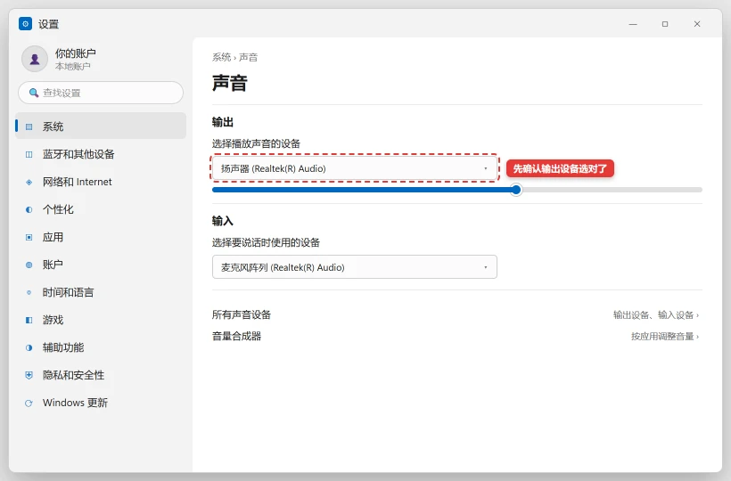

电脑没声音 / 右下角喇叭有红叉怎么修
ℹ️ 本教程全部是设置与驱动层面的操作，可逆、不删文件。先跑官方「音频疑难解答」往往一分钟能自动修好，别跳过它直接去折腾驱动。
💡 一句话结论
没声音按「物理 → 输出目标 → 系统服务 → 驱动」四层查：音箱/耳机本身和插口先确认；然后看是不是「声音输出到了错误的设备」（接了 HDMI 显示器却没选它/该选它没选）；红叉提示「音频服务未运行」就重启服务；更新后没声音重装音频驱动。微软的音频疑难解答能自动处理前两层，永远第一个跑它。
⚡ 30 秒快速排查（先试这个）
- 物理层：音箱/耳机电源和音量旋钮、插头插紧（台式机插机箱后面绿色孔，前面板可能没接线）、USB 耳机换一个 USB 口。
- 点任务栏音量图标，看当前选中的输出设备对不对——接了 HDMI 显示器/扩展坞后声音常常「跑」到没有喇叭的设备上，手动切回扬声器/耳机。
- 开始菜单搜「疑难解答设置」（或 设置 → 系统 → 疑难解答 → 其他疑难解答）→ 音频 → 运行，选你的输出设备让它自动修。
纯小白模式 · Windows
小白一键修复
不想研究原因，就下载脚本，右键选择“以管理员身份运行”。脚本执行前仍会再次确认。
- 适合Windows 10/11，右下角喇叭有红叉、没有输出设备，或系统更新后突然无声。
- 脚本会重新扫描音频设备、重启 AudioEndpointBuilder 和 Audiosrv、打开声音设置。
- 运行前拔掉暂时不用的蓝牙耳机和扩展坞，确认扬声器已通电。
- 注意脚本不会安装声卡驱动；若设备管理器有声卡感叹号，请继续按正文更新或回退驱动。
运行方式：下载后先解压（如有），右键 BAT 文件 → 以管理员身份运行 → 阅读提示后选择 Y。浏览器若提示“不常见文件”，请先核对文件名与下方源码。若浏览器无法下载，点“复制全部脚本”，粘贴到记事本，保存类型选择“所有文件”，文件名以 .bat 结尾。
查看完整 BAT 源码
@echo off
chcp 65001 >nul
setlocal EnableExtensions
title 修盒子 - 重启 Windows 音频服务
fltmc >nul 2>&1
if errorlevel 1 (
echo 正在请求管理员权限...
powershell -NoProfile -Command "Start-Process -FilePath '%~f0' -Verb RunAs"
exit /b
)
echo ============================================================
echo 修盒子 - 重启 Windows 音频服务
echo ============================================================
echo 将重新扫描音频设备，并重启 AudioEndpointBuilder 与 Audiosrv。
echo 不会删除声卡驱动。
echo.
choice /C YN /N /M "确认继续？[Y/N] "
if errorlevel 2 goto :cancelled
echo.
echo [1/4] 停止音频服务...
net stop Audiosrv /y >nul 2>&1
net stop AudioEndpointBuilder /y >nul 2>&1
echo [2/4] 重新扫描音频设备...
pnputil /scan-devices
echo [3/4] 启动音频服务...
net start AudioEndpointBuilder >nul 2>&1
net start Audiosrv >nul 2>&1
echo [4/4] 打开声音设置...
start "" ms-settings:sound
echo.
echo 完成。请在声音设置里确认已选择正确的输出设备。
goto :end
:cancelled
echo.
echo 已取消，没有修改任何设置。
:end
echo.
pause
endlocal
适用 / 不适用
适用
- 右下角喇叭图标红叉 / 音量条拉不动 / 「音频服务未运行」。
- 播放器进度条在走但没有任何声音。
- Windows 更新或重启后突然无声。
- 插耳机没反应、拔掉后音箱也没声。
不适用
- 有声音但杂音、破音：多为驱动采样率或线材干扰，先试疑难解答的「音频增强」关闭项。
- 只有某个播放器没声：是该软件的音量合成器被调 0——右键音量图标 → 打开音量合成器检查。
- 视频里有声音但对方听不到你说话：那是麦克风问题，思路同本文但设备选「输入」。
开始前确认
- 音箱/耳机在其他设备（手机）上试过，本身是好的。
- 台式机确认插的是机箱后面的 3.5mm 孔（绿色=输出），前面板孔可能未接线。
- 记住最近一次 Windows 更新时间（更新后无声有专项修法）。
- 知道自己声卡的品牌（Realtek 最常见，设备管理器里可查）。
怎么确认修好了
- 任务栏喇叭图标正常，播放音乐/视频有稳定声音。
- 插拔耳机时自动切换，无需手动改设置。
- 重启电脑后声音依然正常。
还是不行？
- 四层全试过仍红叉且服务反复停 → 系统音频组件损坏：用「系统改坏了进不去？安全模式、系统还原与重置的正确顺序」里的系统还原退回正常时段。
- 蓝牙耳机连上但没声音 → 输出设备没切过去，看「蓝牙耳机 / 键鼠连不上、一直配对失败怎么修」的连接后设置部分。
- 只有游戏/特定软件没声 → 该软件的音频设备选择里手动指定输出。
预防
- 「优化软件」不要禁用 Windows Audio 服务——它是系统核心服务，禁它换不来性能。
- 大版本更新后先测声音和摄像头，两个最高发的更新副作用。
- USB 耳机/声卡尽量插同一个口，Windows 按口记忆设备配置。
更新日志
- 2026-10-25 v1.0：首版发布。流程综合微软官方声音排障系列文档（主页面 / 无声 / 更新后失效）整理。
分步骤
跑官方音频疑难解答
- 设置 → 系统 → 疑难解答 → 其他疑难解答 → 音频 → 运行。
- 选中出问题的设备（扬声器/耳机），让它自动检测修复。
期望结果：提示已修复，声音恢复。失败了怎么办：继续步骤 2。
把声音输出到正确的设备

很多「没声音」其实就是输出设备选错了（比如选到了没喇叭的显示器）。在「设置 → 系统 → 声音 → 输出」里逐个切换，每切一个测一次音。 - 设置 → 系统 → 声音 → 「输出」下拉里逐个切换设备，每切一个测一次音。
- 右键音量图标 → 声音设置 → 高级 → 音量合成器：确认浏览器/播放器的音量不是 0、未被静音。
- 多屏用户注意：HDMI/DP 显示器自带喇叭的会被默认选中，没喇叭的显示器选中后自然「无声」。
期望结果：切到正确设备后出声。失败了怎么办：输出列表里根本没有扬声器/只有数字输出 → 步骤 4。
重启 Windows 音频服务
Win + R输入services.msc回车。- 找到「Windows Audio」和「Windows Audio Endpoint Builder」→ 右键「重新启动」；确认启动类型为「自动」。
期望结果：喇叭图标红叉消失。失败了怎么办：重启服务又变红叉 → 服务被第三方「优化软件」禁用了，恢复后进步骤 4。
重装音频驱动
- 设备管理器 → 声音、视频和游戏控制器 → 右键声卡（Realtek High Definition Audio 等）→ 卸载设备 → 重启自动装回。
- 若重装后仍异常：去笔记本/主板厂商官网下载对应型号的音频驱动手动安装（Realtek 官网驱动也行）。
- Windows 更新后没声音的专项：设备管理器里右键声卡 → 属性 → 驱动程序 → 「回退驱动程序」（若可点），微软官方对更新后音频失效也是这个建议顺序。
期望结果：输出设备重新出现，声音恢复。失败了怎么办：设备管理器里声卡带感叹号且回退无效 → 步骤 5。
关掉音频增强 / 恢复默认格式
- 设置 → 系统 → 声音 → 属性（点你的输出设备）→ 关闭「音频增强」；「格式」默认改为 16 bit 48000 Hz（CD 音质）。
- BIOS 里声卡被禁用的机器（台式机偶发）：进 BIOS 找 Onboard Audio 设为 Enabled。
期望结果：声音恢复且无杂音。失败了怎么办：全部无效 → 换 USB 声卡（几十块）是最实际的绕过方案；板载声卡损坏的判断也就此成立。
相关教程
最后更新：2026-10-27 · 复核：内容组
读者反馈
这篇教程解决你的问题了吗？
点一下告诉我们结果。「没解决」可以指出问题段落，管理员会回到原文核对并更新。